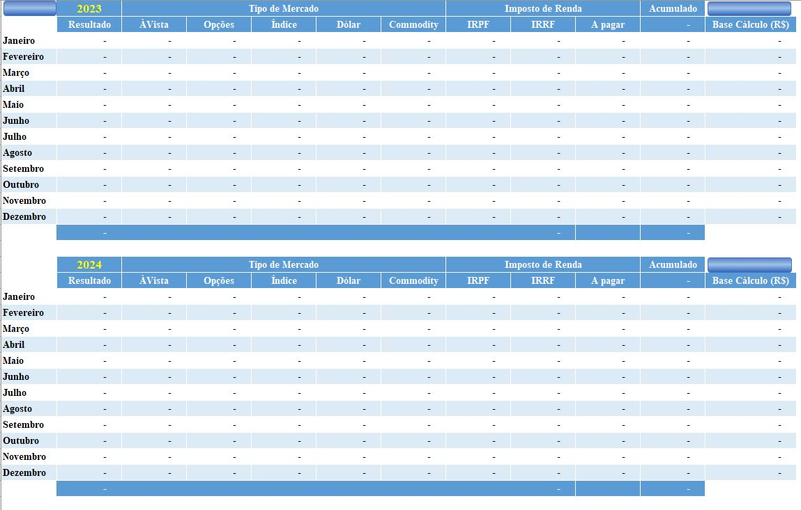
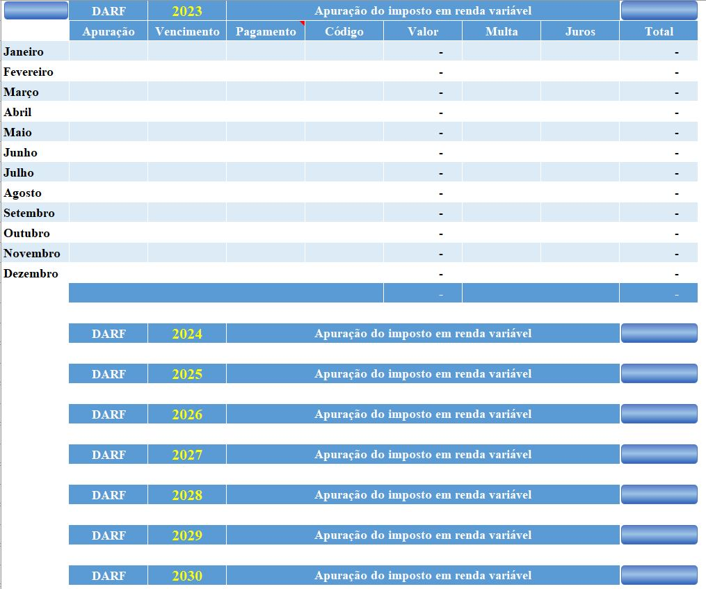
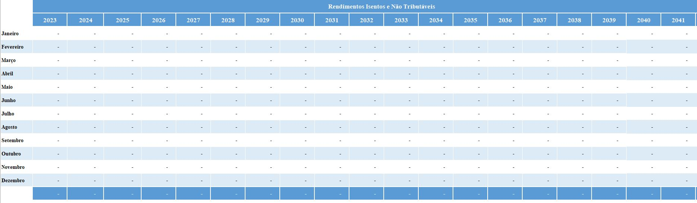
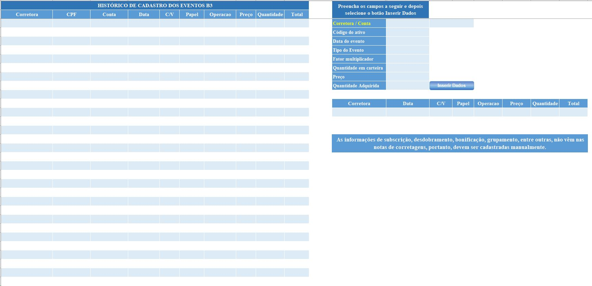

Onde ficam as planilhas
Depois de extrair as notas de corretagem, o COIR grava tudo em um único arquivo por investidor: Resultado\CPF.xlsb, onde CPF é o número do CPF. O controle é separado por CPF e cada mercado (À Vista, Futuros, Commodities e Derivativos/Opções) é contabilizado à parte.
O COIR organiza e calcula as informações das suas operações, mas não substitui a análise nem a responsabilidade de um profissional contábil. Confira sempre as regras tributárias vigentes com a Receita Federal ou com o seu contador.
Operações e contabilidade
Para as operações do mercado à vista, o COIR separa as operações comuns (chamadas de Normais) das operações de day trade. Cada tipo tem três planilhas:
- Normais_Op
- Operações comuns importadas automaticamente das notas de corretagem no padrão SINACOR.
- Normais_Cont
- Resultado das operações comuns, separado por mês e por ano no padrão do IRPF.
- Normais_Dados
- Dados importados das notas de corretagem que alimentam a aba Normais_Op.
- DayTrade_Op
- Operações de day trade importadas automaticamente das notas.
- DayTrade_Cont
- Resultado das operações de day trade, separado por mês e por ano no padrão do IRPF.
- DayTrade_Dados
- Dados importados das notas que alimentam a aba DayTrade_Op.

DARF mensal e IRRF
A planilha DARF disponibiliza os dados para a apuração da DARF mensal. O COIR também calcula o Imposto de Renda Retido na Fonte (IRRF) a partir das operações extraídas das notas.

Declaração anual (DIRPF)
- Isentos
- Apresenta os Rendimentos Isentos e Não Tributáveis auferidos no mercado financeiro e que devem ser declarados na DIRPF.
- Eventos B3
- Eventos da B3, como Bonificação, Desdobramento, Grupamento e Subscrição, que alteram o preço médio do ativo em carteira e que não constam das notas de corretagem.
- Custodia inicial
- Dados de custódia para quem já possui resultados apurados com a Receita.


Gestão da carteira
Além do controle fiscal, o arquivo traz planilhas para acompanhar a carteira:
- Alocação
- Saldo da alocação por ativo, com a porcentagem atual e a porcentagem desejada para cada ativo.
- Balanceamento
- Uma forma de balancear a carteira, com aportes mensais ou por variação de cada ativo.
- Patrimônio
- Total do patrimônio investido em todas as classes de ativo.
- Rendimento
- Rentabilidade da carteira ao longo do tempo.
- ManejoRisco
- Configuração do manejo de risco por operação de renda variável.
- ManejoPosicao
- Estimativa do tamanho de posição para cada operação que será aberta em renda variável.
A planilha Indice reúne o acesso, a habilitação e a descrição de cada uma delas.